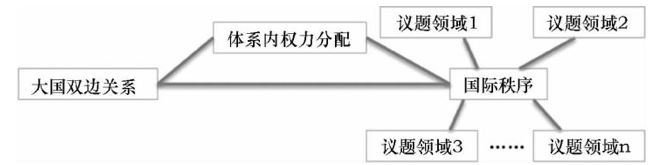

收录于合集
简
温尧
加拿大多伦多大学政治学系博士候选人
摘要
伴随中国的持续崛起，修正主义—维持现状二分法成为学术研究和政策讨论的常见工具。但是，既有研究通常将其视为自然而然的一对概念，较少对其本身进行全面的审视。植根于现实主义传统的修正主义—维持现状二分法在理论阐述和操作化层面，都存在诸多固有缺陷和内在问题。对现状范围和修正对象的模糊定义，往往导致研究对象的混淆和国家意图的误判。关于主导大国的现状假定也造成研究视角的偏狭和疏漏。国家行为与意图间的非线性关系更让行为与属性间的直接因果推理问题重重。在这些理论和实证缺陷的背后，同时暗含着规范维度的深层问题，不对等的道德标签往往伴随着这一二分法的判定和讨论。当前中国与外部世界的关系和互动进一步彰显了修正主义—维持现状二分法的局限性。对中国在南海行为、创设亚投行、坚持国家主权规范等三则事例的讨论显示，这一二分法并非描述和解释相关重要问题的有效视角，扬弃这一二分法、迈向新的话语势在必行。研究者应在保留核心研究关切的同时，避免重蹈覆辙，更加中肯地理解中国外交、大国关系及国际秩序的演进。
关键词
修正主义 中国崛起 国际秩序 南海问题
亚投行 主权规范
导言
修正主义—维持现状（以下简称为“修正—现状”）二分法常常以简约而直观的逻辑与国际关系中的重大议题相关联，许多学理和政策讨论因而往往围绕其展开。特别是伴随着中国的持续发展以及大国政治的快速演进，关于中国是否是修正主义国家的讨论时有所闻。比如，知名学术刊物《中国研究国际期刊》在2017年2月就以“中国是修正主义大国吗？”为主题推出特刊，讨论中国与外部世界的关系。在这些政治话语和社会舆论压力下，中国作为修正大国的“嫌疑人”难免受到持续的关注和测验，并且经常被要求（或者不由自主地感觉到有必要）澄清自己的内外政策以及对国际秩序和重要议题的态度。
但是，在多数既有研究中，无论是指责中国还是为中国辩护，无论是试图改进还是回避使用修正—现状这一二分法，这一对概念本身并没有得到充分的学术讨论，而是更多地被研究者当成自然而合理的理论概念。因此，本 文将从理论和操作层面深入审视修正—现状二分法 ， 并且结合中国崛起的具体事例反思这一二分法的当代适用性 。
一些 “ 功能主义者 ” 或许会质疑 ， 如果本文论及的缺陷真的影响了讨论的开展 ， 为什么人们仍然重视并且愿意使用这一二分法？ 这个问题可能存在两种回答角度。 一种是实证角度 ， 如本文所述，由于既有研究理论澄清不足、测量方式存在瑕疵、逻辑推理存在漏洞，许多关于修正—现状二分的讨论在没有真正满足重要假定的情况下，却仍能够得出一定的（有重要瑕疵的）结论。 另一种答案则需要我们反思修正—现状二分法作为实证概念背后的规范维度 。 在学术研究和政策讨论中，特定的概念和框架往往隐含一定的前提假定和先验判断，研究者也往往围绕它们形成某些特定的理论构想和操作方式，研究问题的提出、实证考察的开展和讨论焦点的汇聚，在很大程度上受其框定和塑造。 事实上 ， 正如本文对中国崛起的事例考察所体现的 ， 围绕修正—现状二分法诸多有缺陷的理论阐释和操作化实践所形成的 “ 问题群 ” 本身或许就值得怀疑 。
本文余下部分将首先简要梳理修正—现状二分法的相关理论论述 ， 并在此基础上从理论阐释和实证操作化等角度探讨这一二分法的内在局限 。 基于理论和操作层面的考察 ， 本文接下来将借助中国在南海的行为 、 中国创设亚投行 、 中国坚持国家主权规范这三个事例 ， 进一步揭示修正—现状二分法的局限 。 经过多方位的审视 ， 本文认为 ， 对当代大国政治的考察 、 尤其是围绕中国崛起的讨论应当最终跳出修正—现状二分法 ， 迈向新话语体系 。 ****
修正——现状二分法的理论阐述及其不足
修正—现状的二分法在国际安全领域使用最为广泛，这一对概念深深植根于国际关系研究的现实主义传统，在 均势现实主义 和 霸权现实主义 两种理论中均被提及。其中 权力转移的相关理论 最为清晰地将这一二分法置于核心地位，并且在很大程度上塑造了它在学术分析和政策讨论中的影响力，相关讨论也多将理论源头归于权力转移理论。 本部分将简要梳理现实主义传统中对于修正 — 现状二分法的相关论述 ， 然后讨论相关理论阐述在修正对象和范围以及主导国行为和意图等问题上的缺陷 。
（一）现实主义传统中的修正—现状二分法
基于经典均势体系构造理论的现实主义者最早使用修正—现状的二分法来描述两种鲜明对比的政策取向或采取这两种政策的国家。在他们看来，这两种类别的区分不证自明，因此并没有进行清楚的理论讨论。 江忆恩就发现，虽然爱德华·卡尔在《二十年危机》中数次提及“现状国家”这一概念，却从未提供清楚的定义。尽管如此，卡尔的确在其书中大致描摹了近乎同义反复的“现状大国”定义，即现状大国的信条是“安全”，它们满足并且乐于维持现状。
摩根索提供了更加明确的论述，他区分了现状政策与帝国主义政策两种类别。前者是“倾向于保持权力且不寻求利己的权力分配变化”的政策，而后者则“意在获得更多权力……寻求有利的权力地位变化”。与此类似，阿诺德·沃尔弗斯也指出现状大国和修正大国追求不同的目标。修正大国追求的是“自我扩展”，这一过程伴随着“频繁而剧烈的权力扩张尝试”，在必要时，它们会利用武力改变现状，并且“给现存秩序带来显著改变”。相比之下，现状国家则追求“自我存续”，它们近期并无增长权力和追求优势地位的动机。在其论述中，沃尔弗斯注意到一个重要的细节：现状大国可能也希望改变，但它们通常不寻求权力的扩张和使用武力。同时值得注意的是，摩根索和沃尔弗斯都在其定义中同时囊括了对意图和行为的描述。
伴随着沃尔兹结构现实主义的风行，均势现实主义理论家关于修正—现状的讨论暂时停止，因为结构现实主义主张单元层次的变量只能提供片面的、还原主义的解释，构建理论的努力被引向体系层次。
与均势现实主义仅是简略涉及不同，基于霸权稳定及其更替而构造的霸权现实主义理论一直对修正—现状二分法的发展和推广有着更加重要的影响。 吉尔平的霸权更替理论提出，国际政治的变化由体系中权力均衡和国家的成本—收益计算所驱动，国际体系中循环往复地出现主导国家的更替。不同国家的权力以不同速率增长，由此带来的声望追求和潜在物质利益考量等动机促使国家试图扩张权力并改变体系。因此，为了自身利益改变国际体系的国家即为修正主义国家，而现状国家则是试图维持现有体系的主导大国。
权力转移理论由奥甘斯基提出，并由其一干弟子不断发展。这一理论的基本假设是：国际体系中存在一个等级制，体系中的最强国处于顶端，它创设并维持当前的国际秩序，并从这一秩序中获取最多利益。因为国际体系中的“现状”——主导国建立的国际秩序——最符合主导国的利益，所以主导国自然被视作满意的维持现状国家。与此同时，其他非主导大国通过经济增长快速聚集权力，由于当前秩序及利益分配规则在它们相对弱小时便已确定，当它们成长为大国时势必不满于现状。因此，随着大国继续成长，它们“不满自身在体系中的位置，并且渴望重订规则”。基于此，权力转移理论提出，当崛起的不满意的挑战者试图改变现状而主导大国拒绝改变时，体系战争一触即发。
在权力转移理论中，权力转移或者转移的趋势解释了战争爆发的可能，而对现状的不满则给出了崛起国使用武力改变现状的动机，因此，对现状的满意程度或者对修正的渴望程度就成为这一理论中至关重要的变量。尽管许多研究者并不必然赞同权力转移理论的整套理论假设和主张，但众多研究对这一二分法的使用明显受到了该理论的影响或启发。
（二）修正何种现状？
在谈及修正—现状二分法时，学者关注的重点往往在于崛起大国。尽管并没有学者断言崛起大国一定是修正主义国家，崛起大国不断增长的权力及其新的利益需求，让它们自动成为修正主义国家的“嫌疑人”。那么这类国家谋求修正何种现状？由前文可见，在理论层面，学者们基本都认为修正主义国家的行为对国际体系有着全局性的影响，它们最重要的目标和影响在于修正国际结构或者国际秩序。经典均势现实主义者通常关注崛起国谋求权力扩张的行为以及由此带来的体系内权力分配的变化，这些纯粹的权力政治因素决定了国际体系的结构。吉尔平和权力转移理论家们在谈及国际体系现状时则突出国际秩序的存在，他们通常假设这一国际秩序作为整体而存在，并且统摄国际关系。然而，具体到不同的实证研究中， 讨论涉及的修正对象各不相同而且常常被混为一谈，导致人们对修正主义的误解和误判。这个问题很大程度上与理论层面缺乏具体的澄清和定义有关系，也就是说，修正主义指向的对象究竟为何？
这个问题通常涉及密切联系却不能等同的三个概念：崛起国与主导国间的双边关系、体系中的权力分配、国际秩序。 国际秩序与权力分配并不完全等同，权力分配也并不是完全由崛起国与主导国的双边关系决定的。一些实证研究却有意将这些有差异的概念等同起来，导致其不能令人信服地得出关于修正—现状的结论。
围绕权力转移理论的一些实证检验彰显了这一混淆概念和对象的问题。 比如，一些研究采用的衡量指标是双边关系中军事投入的数据，但很多原因都能促使一个国家加大军事投入，崛起国军力增长也并非只能针对某一个国家。这类指标剥离了具体情境，并不能使我们直接判断某个具体国家对基本的权力结构或者国际秩序怀有何种态度。
更加值得注意的是，时间应该成为一个重要的维度。在主权国家体系出现之后，国际秩序的内涵并非一成不变，而是不断进行演化和分化。其中应特别注意武力扩张以及议题领域这两个与修正—现状二分法相关的问题。一方面，武力扩张和领土征服在国际体系中的频率和作用都大幅下降。 特别是二战之后，几乎很少出现国家“死亡”，相反，国际体系中的国家数量一直稳步增加。在这种国际环境中，武力扩张这种曾经非常直观的修正国际现状的指标变得不那么重要了。随着国际体系的演化，国际秩序日益由众多获得广泛认可和支持的制度、规范和准则构成，大国之间对构成国际秩序的这些基本单元未必没有共识，权力等级的更替因此也未必造成秩序的根本变化。 权力结构与国际秩序之间因而也越来越难以建立线性的直接对应联系。
另一方面，国际秩序的精细化和复杂化也在加深。 主权规范以及大国战争的过时使得传统安全领域仅仅成为众多重要议题中的一项。经济、环保、人权等传统国际政治中的 “低政治 ”议题在国际事务和全球治理议程中的地位不断上升，议题领域间既相互交织又有各自独特的发展。一个国家对不同议题领域的现状或许怀有不同程度的修正意向，但某个议题领域中的秩序变化也不必然外溢到另一个议题领域，因此要定义作为修正对象的国际秩序本身就成了难题。 这部分解释了为什么不同学者往往选取迥异的指标和数据作为自己判断修正—现状属性的标准，从而造成一些研究混淆修正对象并误读国家意图的乱象。
尽管权力转移理论或明或暗地将修正主义倾向与国际秩序联系在一起，学者们甚少直接谈论这一点，国际秩序仿佛只是一个抽象的背景概念。由此，“现状 ”经常被等同为主导国的利益，不同层次的概念也经常被混淆，出现了 “与主导国冲突即为挑战现有权力结构，也即为谋求修正国际秩序现状 ”的逻辑混乱，如图１所示。这一缺陷同时带来另一个重要弊端，即很多时候在修正—现状框架下讨论大国政治时，主导国实质上被忽视或简单带过。

（三）主导与修正的区分
崛起大国有可能扮演修正主义国家的角色，这一点毋庸置疑，但在涉及修正—现状二分法的许多研究中，这一或然命题往往变成了“崛起大国是唯一有可能修正现状的国家”。 例如，卡斯特纳和桑德斯的研究假设，如果中国领导人表现出更愿意出访所谓“流氓国家”、与美国交恶的国家或者美国的盟友，那么中国便存在修正主义意图。在这里，美国的对外关系成为衡量其他大国修正与否的标尺，美国更被直接假定成了现状的定义者。这是因为在权力转移理论等研究的论述中，主导国天然是现状大国。 这种假定混淆了一个国家的权力大小和满意程度，在当前拥有体系中最强的权力并不必然意味着主导大国是满足现状的。
关于当前“单极时刻”的研究对这个问题有很大的启发意义。在单极世界中，唯一的超级大国占据着权力等级的最高点 ， 这样的体系应该最符合权力转移理论所描述的国际关系世界。 在单极体系中，制衡主导国家天然地被视为一种修正主义行为，单极国家能够自如地回避国际关系中常见的许多外部限制。尽管乐观的自由主义者认为，美国作为自由秩序霸权国长久以来奉行战略克制，但在这种宽松甚至纵容的环境中，单极国家完全可能通过改变相对权力关系以及各种国际准则和安排来修正现状以攫取利益。
除了攫取利益和防患于未然的考虑，主导大国也可能为了当下止损而产生修正现状意图。 为了解决维持现状过程中遇到的各种麻烦，主导国很可能选择进一步扩张或者大幅度修改体系中的游戏规则。例如，不少实证研究已经指出，美国的确正在采取一些措施来护持自身的霸权地位和不对等利益。
这些批评实际上指向了许多现有研究存在的功能主义倾向，即认为制度由主要行为体理性设计并能长期发挥预期效用。 事实上，随着时间推移，由于行为体本身固有的局限性以及制度运行后可能产生的各种复杂效应，行为体意图与制度实际作用之间将会逐渐拉开距离。主导国本身的利益和行为将随着内外情势的变化而不断变化，国际秩序中的各种规则和制度的运行情况也会因为各种原因发生改变，因此， 国际秩序与主导国利益的契合度并不会一直维持秩序初创时的状态，主导国同样可能有修正现状的充分动机。
此外，从这里的讨论可以看出，修正—现状二分法在某种程度上模糊了主导大国的意图及其行为本质问题。就规范层面而言，主导大国至少应该被视为道德中性而非先验正义或正确的一方，它们常常有着与其他大国相似的利益追求及行事逻辑。 尽管如此，当主导大国被天然地定义成现状大国时，这种主导地位仿佛也被视为某种天然正确而无须审视之物。在修正—现状的讨论框架中，主导大国与修正主义国家似乎成了完全不同的两个对立面。
修正——现状二分法的操作化困境
修正对象和范围的不清晰使得不同研究者诉诸不同层次和属性的指标来测量二分判定的核心变量，国家意图与行为间复杂、非线性的关系也使相关描述和因果推断问题重重。同等重要的是， 在理论缺陷和操作问题的背后隐现着规范层面的固化取向，修正—现状二分法因而或明或暗地附带着粗陋的道德标签，从而影响有效实证研究的开展 。
（ 一 ） 修正意图的测量
尽管修正—现状二分法被众多理论家提及并在权力转移理论中扮演关键角色，其具体内涵及测量指标却没有得到充分论述，实证研究中的操作标准因而模糊不定。在缺乏准确定义的情况下，对体系的不满这一因素经常沦为学者为回避批评而诉诸的 特设性解释 。尽管如此，权力转移理论为后来的研究者提供了一个大致的研究框架， 许多学者在修正 — 现状二分框架的基础上发展出了一系列的测量方法来判断国家的修正倾向和不满程度 。
均势现实主义和霸权现实主义两种理论取向均把修正意图作为重要的理论落脚点，又同时将其与某些行为或政策相关联，或明或暗地形成了 行为 → 意图 → 属性的推论链条 。 一些学者借助历史数据进行研究 ， 他们采用的指标有双边关系中国家的军事投入、结盟情况相似度、货币储备成本、政府间国际组织加盟情况等等。 另一些学者则试图把修正 — 现状二分框架用于分析中国外交 ， 他们采用的指标有中国对国际机制和权力分配的态度、在领土争端中的表现、国家领导人的信念体系操作码、领导人出访记录等等。可以看到，不同研究虽然都声称目标在于评估国家的修正主义或不满意图，却采用了不同层次和议题领域的各类指标。 尽管这些研究设计富有创意 ， 且方法操作上严谨精细 ， 但仍然不足以解决修正 — 现状二分法的内在缺陷和重要分歧 。
（二）行为—— 意图推理及测量难题
从前文讨论中浮现出的一个重要问题是 行为与意图之间的区别和联系 。在既有研究中，大部分学者或者没有指出二者间的区别，或者认为这一区别并不重要。如前所述， 经典现实主义者 多通过一国是否在已有权力基础上进行扩张来识别修正主义国家，尽管测量意图和目标是他们修正—现状二分分析框架的关键部分，但他们的判断根据仅仅是国家行为。 权力转移理论家们 似乎更加强调因果推断的过程，他们试图把判定国家意图的步骤明确纳入理论框架，根据对现状的满意程度这一核心变量进行理论建构。 但是 ， 这些研究暗含的问题恰恰在于缺乏有效的方法来通过行为识别意图 ， 国家的意图和行为并非总是完全吻合 。 取数据对崛起国是否存在修正主义意图进行判定，不同的修正对象包含着迥异的行为逻辑和意图，混淆不同的修正对象以及修正范围，容易使研究者错误解读国家的修正主义倾向。
第二 ， 在不利条件下 ， 一个修正主义国家往往不会做出明显的修正现状行为 。 崛起大国往往有强烈的动机逃避国际责任，回避作为体系领导者必须承担的重负，在这种情况下，即使是不满的崛起大国也缺乏动力提供改变现状、变更秩序这一公共物品。即使是做好准备使用强制手段挑战现状的崛起大国，也会为了掩盖真实意图、减少外部制衡压力而采用诸如合法化策略的手段。
权力转移理论家们或许会指出 ， 意图并非他们预测大战爆发的唯一关键变量 ， 另一个重要变量是大国权力的客观接近 ， 但如果过分强调物质权力或曰外在行为的重要性，这似乎又在暗示不到最后临近大战之时，我们无法准确判断某个大国是否有修正意图。一个分析概念的重要价值之一恰恰在于其能够框定先验判断的标准，从而为科学预测或者政策制订打好基础。联系前文所述武力扩张现象在大国政治中几乎消失，当代这种从行为直接到属性的直观判定变得越来越不可能。
第三 ， 国家意图的复杂性在某种程度上被修正 — 现状的简单二分法掩盖和低估了 ， 这也解释了为什么众多研究仍然没有就修正对象到底是什么达成一致 。 所谓的现状大国行列里自然会包括很多仅仅对国际秩序某个部分不满的国家，只不过他们的不满还没有发展到想要推翻整个秩序的地步。这些国家或许对国际秩序有着重大影响，但修正—现状的简单二分法使它们落在研究焦点之外。
国际关系研究日益关注的地位议题正好指向了这一问题。国家内在地具有追求地位的冲动，它们势必不满于自身在国际社会中的地位，因而会寻求改变，但这种地位追求并不必然意味着展开激烈的权力争斗并推翻整个国际秩序。 基于社会身份理论 ， 拉尔森和舍甫琴科提出崛起大国有三种地位追求策略可选 ： 社会流动 、 社会竞争以及社会创新 。 这三种策略变革国际秩序的程度各异，有时即使国家不寻求推翻整个秩序，其所选策略囊括的某些行为仍然会使该国家被归入修正主义者的范畴。值得注意的是，如前文所述， 即使是主导国家被更换 ， 也并不意味着国际体系内的基本规则和秩序被彻底修改 ， 修正对象的澄清仍然显得尤为重要 。
此外 ， 崛起大国并不一定追求地位最大化 ， 尽管崛起大国都渴望提升自身地位 ， 但它们往往由于国际和国内的多重原因 ， 释放出混杂甚至自相矛盾的地位信号 。 乍看之下，这类现象存在两种解读方式。 一种解释是 ， 崛起大国的确怀有修正主义意图，但披着羊皮的它试图表现得（至少部分地）像一个现状维持国。 另一种则是 ， 崛起国本身对现状就有着复杂的态度，因此在不同的议题领域和层次上表现各异。同一表象背后因而存在多种可能的理解方式， 这再次提醒我们 ， 混淆或误读不同的修正对象 ， 可能极大地影响对修正主义意图的判断 。 总之 ， 行为和意图之间并非简单地存在线性联系 ， 绕过对意图的推理更容易导致对修正 — 现状属性的误读 。
（ 三 ） 修正 — 现状二分法的规范取向
在实际研究中 ， 修正 — 现状二分法倾向于将一些属性和特征固定地分配给不同的行为体 ， 这使得学术研究和政策讨论常常带有关于某一类国家的刻板印象 。 如前所述，这体现在将崛起大国视为几乎唯一有可能修正现状的国家，并假定主导大国总是现状大国。不仅如此，尽管修正—现状的二分只是一对实证概念，在价值取向上理应中立，但在许多学术和政策话语中， 这一二分法还潜藏着道德判断 。 修正主义国家容易被认为是贪婪的侵略扩张国家，影响国际体系的稳定以及对国际秩序的维持，而现状大国则易被视为秩序的守护者或者正当利益的代表。
巴里 · 布赞认为 ， 修正主义这个概念之所以附着各种负面含义 ， 与希特勒的纳粹德国被视为修正主义国家的典型代表有很大关系 ， 修正主义国家因此被习惯性地当成体系中的问题根源 。 相比之下，国际关系研究中关于现状大国的描述常常聚焦于较为稳定地维持霸权体系的英国和美国。在这种特定情境下，修正国家与维持现状国家在道德、正义层面的强烈反差，似乎以一种 路径依赖的方式 塑造了修正—现状二分法背后的规范性内涵。
理论缺失 、 操作化瑕疵以及暗含的规范取向 ， 使涉及大国政治的政策研究容易滑坡成为 “ 有罪推定 ” 的多发之地 ， 这种政策逻辑最突出的代表是米尔斯海默构造的进攻性现实主义 。 由于大国之间往往不能确定对方的意图，以生存为首要目标的它们只能采取进攻性战略，力求主导地位。 政策制定者往往需要平衡两类知觉错误的风险 ： 第一类错误是将现状大国误判为扩张主义国家 ， 第二类错误则是将扩张主义国家误判为现状大国 。
当今如中国这样的崛起大国因而长期处于一种不对等关系之中，往往需要“自证清白”，并且承受额外的政治压力，而主导大国怀疑的态度一旦形成，往往在相当一段时间内难以解除，并且反而可能加深。总之， 修正 — 现状二分法隐含着 “ 崛起大国 → 修正主义大国 → 道德低劣大国 ” 的规范性推断倾向 ， 不仅无助于实证研究的有效开展 ， 还有可能使政策讨论陷入偏狭的误区 。
修正——现状二分法与中国崛起
修正 — 现状二分法在理论和操作层面存在的诸多缺陷和问题与当今国际秩序的演进和大国政治的变化有着密切联系 。 当前世界政治中最为瞩目且影响深远的动态之一当属中国的快速发展和崛起，相关学术和政策讨论却仍然在很大程度上围绕既有分析框架和话语体系展开。特别是自从中国在国际舞台上看似愈发“强势进取”以来， 学界和政策界关于中国是否具有修正主义倾向的讨论再次变得热烈 。 本部分将选取容易引发修正—现状二分法相关讨论的 中国在南海的行为 、 中国创设亚投行 、 中国坚持国家主权规范 这三个事例进行分析说明。这三个事例分别对应中国在具体议题、国际制度、国际规范等三个层面的行为及对外互动，这三则例解进一步彰显了修正—现状二分法的各种内在缺陷和问题，并且提示当代大国政治的研究者必须扬弃这一二分法、迈向新的话语和框架。
（ 一 ） 中国在南海的活动
中国 “ 强势进取 ” 形象的一大来源当属中国在南海更加积极强硬的外交宣示和政策行为 。 一些学者、时评人以及包括麦克马斯特在内的美国高官，将中国在南海的一系列动作解读为意在扩张领土、增长权势，而这进而被理解为中国正追求地区霸权、构成对美国主导地位的制衡和对抗，按照这一推理逻辑，他们判定中国为修正主义国家。
在讨论中国在南海的行为时 ， 首先 ， 需要明确定义修正 — 现状二分法的修正对象到底为何 。 南海争端的进程及结果可能对声索国双边关系、中美关系、国际权力结构以及围绕领土主权的相关规范规则都产生影响。 南海问题的发展首先肯定对中国及相关声索国之间的双边权力关系产生影响 ，而由于南海之争的一个焦点在于海上领土的认定及维护，其进程必然塑造作为当前国际体系的根本性规范的主权规范的相关操作细节及解读方式。同时， 在地区和全球层面 ， 中国在南海问题上的收获（或损失）将直接影响中美之间的力量博弈以及国际权力结构的变化，而美国在此问题上间接或直接的介入更是让自身直面中国。 由此可见 ， 无论局势如何发展 ， 中国在南海的行为势必以各种方式同时影响多个潜在的 “ 修正 ” 对象 。
其次 ， 即使确定了 “ 修正 ” 对象 ， 研究的关注点也不应附带武断的道德判断 ， 先验地锁定于某一国家 。 具体到南海问题 ， 相关国家的动作都应该放在相同标准下进行衡量 。 在近年南海问题逐渐升温之前，越南、菲律宾等声索国都有驻军、移民等占据岛礁的行为，并且长期单方面进行油气资源的开发。与此同时，中国在有能力采取更多动作的情况下一直保持高度克制，并且只在南海无争议区域进行一些油气开发工作。直到近年感到受侵害日渐严重，中国才采取了更加“强硬”的手段进行回应，强化行政管控能力，开展岛礁建设并且提升相关技术水平。但正是这些长期克制后的行为使得中国备受指责， 若严格确定操作化标准 ， 在中国被指为 “ 修正主义 ” 时 ， 越南 、 菲律宾等国应该同等地被视作 “ 修正主义 ” ， 且其持续时间远远长于中国 。
最后 ， 尽管某些行为在实际效果上造成 “ 修正 ” ， 如果研究的出发点在于判断意图从而确定国家属性 ， 那么从行为到意图的推理仍需谨慎 。 既然存在多个可能的修正对象 ， 看似对某些现状的 “ 修正 ” 或许仅仅是非故意的附带性后果 。 中国有众多政府机构和半官方机构参与南海事务之中，它们出于各自考量行事，难免互相掣肘，某种程度上加剧了局势的复杂程度和协调对外行为的难度。中国在南海的一系列欠缺连贯性的行为，正体现了这种国家权力的分散化、碎片化，因此，研究南海问题不能假定中国怀有某种“阴险”的大战略意图。与此同时， 另一些学者则质疑国内政治解释路径在南海问题上的效用 ， 主张中国确实存在较为一致连贯的战略意图和政策考量 ， 并且认为特定机构无论在政策制定还是实际执行过程中，都能够较为一致地起到中枢作用。 在南海问题上 ， 基于同样的经验观察 ， 不同学者借助不同视角却得出了相反结论 ， 这一现象恰恰说明表面行为不能为修正 — 现状的二分法判断提供过多证实性的依据 。
（ 二 ） 创设亚投行
在国际金融领域，亚投行等一系列新的国际机制和组织的创设吸引了学界和政策界的密切关注，这不只是因为中国带头创设的亚投行涉及范围广泛，改变了国际金融治理格局，更因为其彰显了深远的权力结构和国际秩序意涵。正因如此， 《 外交事务 》 网站甚至在各国尚未签署协议之前就询问一众专家 ： “ 亚投行是否开启了对现有全球多边秩序的根本挑战？ ” 这一问题的提出方式在某种程度上与修正—现状二分法异曲同工，既预设鲜明的对立关系和身份标签，也寻求通过政策行为推理出背后意图。很明显，这种截然的设问方式并不能帮助研究者探究新的国际行为和互动背后的深层涵义。
首先需要注意的是 ， 与亚投行相关的讨论仍然需要避免偷换或混淆对象的问题 。 更重要的是， 新机构的创设本身并不意味着中国寻求更改现有主导机制的组织方式 、 运行规范和根本精神 。 当前国际经济秩序中的主要机制和规范都是在美国主导下发展和维持的，因此，就单纯功能角度而言，亚投行的创设事实上加深、巩固了构成现有秩序的制度和观念的有效性和合法性，有利于继续提供现有公共物品。中国的这一令人瞩目的“修正”行为似乎与美国的利益和观念并不抵触。
当然 ， 国际制度在当今世界正日益成为大国博弈的主要渠道 ， 大国之争往往以制度之争的面貌呈现 ， 创设新制度正是崛起国挑战主导国 、 另立炉灶的有力抓手 。 前文所述意图与行为间复杂关联的问题在此再次浮现。 一方面 ， 目前尚无系统性的经验证据表明中国有充分意愿通过创设亚投行等新机构，在国际金融领域甚至整个国际秩序内部带来重大变化。 另一方面 ， 即使存在“修正”意愿，中国仍然在诸多方面受到限制，无法切实如愿。
尽管如此 ， 亚投行是否构成挑战取决于美国是否将其当成挑战来应对 。 美国既可能因为经济关系和制度规范所衍生出的政治权力而忌惮中国在国际机制创设方面的投入，也可能因为顺应大国功能分异的趋势，从而与中国实现两极体系下的共治。因此， 某个国家修正与否 、 某项政策挑战与否等问题 ， 并非大国关系和国际秩序走向的核心所在 ， 更加关键的变量在于国家间具体的互动进程和动态变化 。
与此紧密联系的是规范层面的问题 。 如果假定当前的国际经济秩序在相当程度上是正当、合法的，那么与既有机制和规范基本保持一致的亚投行也可以被视为是妥当、甚至是进步性的。在构成上，亚投行的创始成员国既包括美国的一些政治和经济盟友，也包括与中国争端不断但仍在最后一刻选择加盟的菲律宾，这从侧面反映出亚投行的开放性、认可度以及权威性。相比之下，美国谋划的一些新机制反而出现排他性的趋势，与开放的基本精神相悖。 当然 ， 从规范角度评判亚投行的进程及影响尚需一定经验证据的积累 ， 资金利用情况 、 基础设施建设情况 、 相关国家决策者和民众的访谈调查结果等数据 ， 则将有助于开展实证评估 。 在亚投行运行过程中，国家间互动是否平等合理、具体的制度设计是否公正有效、引发的制度竞争是否良性相容等一系列规范性问题都值得考察，它们不仅本身是衡量某一新制度是否有益于增进国际社会整体福利的标尺，同时也将深切地影响大国关系的走向与国际秩序的演进。显然， 这些深层次的规范性问题都不是修正 — 现状二分法所附着的简单道德标签能够截然概括的 。
（ 三 ） 坚持国家主权规范
国家主权原则是中国长期坚持不动摇的最重要的国际体系基础规范之一 ， 这一原则是当前国际体系得以塑造成型的基本出发点 ， 也是众多国际制度得以构建的基石 。 相比之下，美国在两次世界大战之后通过鼓励民族自决、去殖民化等方式倡导 民族主权 ，并在冷战结束后通过各种民主推广手段强调 个人主权 的重要地位。
如果追溯思想根源， 国家主权规范与其他两种主权规范事实上都源于自由主义传统 。 中美对于相关问题的不同态度正体现了以自由主义理念为基底的国际体系内不同秩序理念的摩擦：
第一 ， 中美关于国家主权规范与民族主权规范之间关系的态度存在很大差别 。 格里菲斯注意到，在美国主导的秩序中， 美国认为 国家领土完整和民族自决这两种规范都重要，试图在国家主权与民族自决之间找到平衡点，却往往徒劳无果。格里菲斯认为，如果未来世界迎来“中国治下的和平”， 中国 将坚定地站在保持国家领土完整这边，国家主权将得到充分尊重，两个规范孰轻孰重的选择权利也将归于国家手中。以领土边界为标尺，这种假想的中国“霸权”秩序将会变得“分外稳定”。
第二 ， 中美关于国家主权规范与个人主权规范之间关系的态度也相去甚远 。 中国 一直坚定地维护以联合国为国家间集体行动核心平台的多元秩序，并且不断倡导国家间的平等互信、包容互鉴。但与此同时，伴随着冷战的结束和“历史终结”信念的增长， 本质上反多元主义的新自由国际主义理念逐渐在西方占据主导地位 。新自由国际主义以民主、人权等自由主义理念划界，根据国家的政治制度和意识形态重新划定国际社会中“合格成员”的标准，被认为“非民主”的国家因而成了处于道德劣势的“他者”。
因此 ， 从国家主权这个当前国际体系最深层次的规范来看 ， 中国是坚定的维持现状大国 ， 而美国则长久以来扮演着 “ 修正 ” 基础规范的角色 。
新自由国际主义者认为自由民主是实现个人自由的最好制度框架 ， 国际社会的良治也应该由民主国家拱卫 。 与此同时，因坚持国家主权优先、维护联合国权威，中国却经常被视为阻碍了自由主义理念的推广。中国被批评为世界上威权制度的核心维护者，中国秉持国家主权规范和不干涉内政原则，也被看作是在传播威权规范和“反民主”规范。在此视角下，鼓励多元发展、维持国际体系最基础规范的行为，反而成了阻碍进步、甚至道德低劣的行为。
中美在此问题上的差异体现了修正—现状二分法在规范层面的局限性，这一二分法潜在附带的道德标签使其无法帮助分析者开展充分客观的研究。事实上，既然涉及规范问题，不应武断得出某种立场可取或不可取的结论，更不能以简单的二分标签来定义。 每个行为体都有着独特历史 、 本地情境和认知体系 ， 即使是认同同一规范的行为体之间 ， 仍然存在共同体内部的辩论 ， 更何况国际社会本由复杂而多元的各类行为体组成 ， 道德层面的判定因而更需要开展坚实的实证研究和有益的辩论交流 。
（ 四 ） 小结 ： 超越修正 — 现状二分法
通过对以上三则事例的讨论可以看到，修正—现状二分法在理论阐述和操作化层面的缺失和问题彰显于学界对中国崛起的相关分析之中。即使在理论层面能够充分澄清、在实证研究中合理处理经验证据，中国崛起给当今国际关系带来的复杂效应恐怕都难以简单通过修正—现状二分法的视角进行透视。 修正 — 现状二分法在一定程度上框定了学术讨论的议题和方式 ， 如果学者完全接受既有研究的相关假定及讨论路径 ， 那么无论是为了论证某个国家是修正主义国家 ， 还是为了从学理角度为该国澄清和辩护 ， 相关讨论都难以摆脱这个二分法所内含的缺陷和弊端 。 因此，未来的学术研究和政策讨论应当在保留相关核心关切的前提下超越修正—现状二分法。
第一 ， 由于国际体系中议题领域日趋多样和复杂化 ， 国际安全也并非当今国际关系中唯一重要的领域 ， 研究者在研究中识别具体的议题领域并且明确讨论的边界尤为重要 。 由于研究议程不被修正—现状二分法所框定，在研究中可以更灵活地考察不同议题领域内的动态，并且进一步探讨领域间的关联和互动，研究者不能因为固定了某种修正对象和范围，而忽视了或许同等重要的一些间接性、非故意后果。
第二 ， 研究者应该实证考察国家间的行为龃龉或协调 、 利益冲突或趋同 、 观念差异或接近 。 在舍弃了修正—现状二分法设定的框架后，国家间关系的取向不再关注于双方是否对立，而是能够容纳更加多样而动态的状态组合，并追踪其最终导向的结果。 研究者最为关注的大国政治后果以及国际秩序演进等问题 ， 最终需要通过观察特定国家间的行为和互动来得出答案 ， 而不论背后驱动这些 行为和互动的意图或考量为何 。 在某种极端情况下，只要主要国家间利益趋近、达成一致，即使某一行为大幅变更甚至严重破坏国际秩序，大国政治进程仍然可能是平和而稳定的。这种关注具体行为和互动进程的路径，同时也就绕过了修正—现状二分法涉及的意图假定和判断等问题，很大程度上回避了理论和实证上的雷区。
第三 ， 就规范维度而言 ， 研究者需要判断国家的行为及其带来的变化是否有益 、 正当 。 但回答这一问题并不仅仅是武断、机械地根据行为给国家贴上道德标签，而是要依据一定价值标准开展细致的实证考察。只有跟踪具体的国家行为和互动进程、了解相应结果是如何产生的，并且通过合适的衡量指标来展开前后对比，才能充分了解某种“修正”是否增进了行为体的福利水平、是否增强了国际秩序的合法性、是否缓解了国际社会的结构性不平等。当然，值得注意的是， 正如不同主权规范之间的关系一样 ， 国际关系中经常出现不同规范取向的共存和对抗 ， 它们或许同等重要 ， 却又彼此龃龉 ， 因此 ， 规范维度的探究过程本身或许是相对的 、 动态的甚至易变的 ， 研究者之间或许应该进行开放的论辨式互动 ， 以确立相对合理 、 有效的衡量标准 。
总之，修正—现状二分法的内在缺陷使其无法成为描述和解释中国与外部世界互动的有效视角，在吸收修正—现状二分法相关理论关切的基础上，中国崛起所裹挟的复杂效应呼唤新的思考点和分析框架，也给国际关系学者带来理论创造的新契机。
结语
在某种意义上，中国的持续崛起维系着修正—现状二分法的生命力。在既有研究中，无论研究者采用还是拒斥修正—现状二分法， 一个若隐若现的前提假定是 ， 这一二分法本身是自然而完整的学术工具 ， 可凭研究需要自由选取 ， 研究者因而较少直接针对这一二分法展开全面的剖析和批判 。 仔细追溯修正—现状二分法的相关理论阐述和实证研究可以发现，其修正对象和现状范围定义模糊、不同层次的概念常常被混同起来、主导国也经常被先验假定为天然的现状大国，这些偏见导致研究结论往往出现误读经验证据或逻辑矛盾等情况。此外，在具体实证研究中其操作化标准不一，通过行为直接推导意图和属性的思路，也容易因为行为与意图间复杂而非线性的关系而造成判断失误，何况 修正 — 现状二分法背后更隐含着不对等的规范性问题 。以上理论缺失和实证问题集中体现在针对中国在南海的行为、中国创设亚投行以及中国坚持国家主权规范的相关讨论中，很明显，由于内在缺陷和固有偏见，修正—现状二分法已经无法作为有益视角对中国崛起的相关问题进行有效的分析。
中国的体量是如此巨大 ， 期望其在崛起过程中不对地区动态 、 大国互动以及国际秩序造成任何影响是不切实际的 。 这种影响有时是对某些权力结构、制度设计以及规范动态的改变和更替，有时则是对它们的维护和巩固，因此，并不存在某种一刀切的逻辑或标签能够统一涵盖不同议题领域、不同分析层次上发生的变与不变。 在某种程度上 ， 崛起的中国与中国崛起的外部环境可以看作是两个尝试接触的能动者 ， 这两者本身就各自有着复杂的背景知识、制度构造和行为动态，除非二者先天完美契合，或者某一方使用强制手段让对方全盘接受自身已有观念和实践，否则中国崛起的进程必然是中国与世界逐渐互动和磨合的过程，这一过程也必然伴随着各个领域和层次之内（以及它们之间）的非线性、不规则的相互撕裂或弥合。在这个意义上，修正—现状这对概念最好被视为“理想类型概念”，它们作为学术概念的外延是零，几乎不存在直接对应它们的实例。因此，为了更有效地描述和分析中国与世界的复杂互动，学术研究和政策表述需要超越这一二分法，寻找新的话语。
对中国国际关系学者而言 ， 首先需要跳出已有话语对研究主题 、 设问方式以及作答选项的限制 ， 以实证为导向 ， 使用清晰的概念和理论来描述和解释中国在具体问题和领域的外交行为 、 中国与外界的复杂联系以及国际秩序的变迁 。 同时， 在规范层面 ， 我们也需要发展出合理的分析框架，力求客观地衡量和评价中国和美国等大国的各种行为所伴随的道德意涵，由此，研究者才得以结合对已有实践的考察和规范问题的思考，更加全面地观照理论构筑、历史经验与现实发展间的联结和分野，进一步探索崛起的中国与变化的世界之间互动的可取路径及应有内涵。
文章来源：《外交评论》2017年第5期
编辑：小宜 里仝